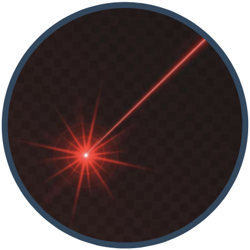
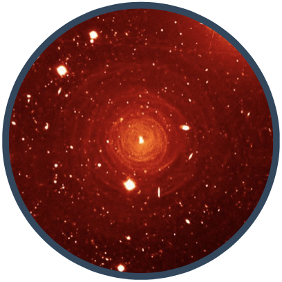
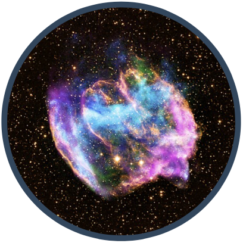
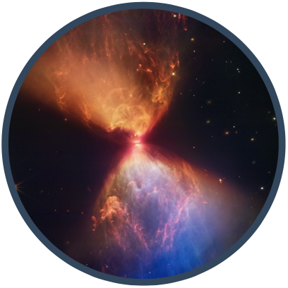

Here is a full list via ADS
including 18 refereed papers (five 1st-author, see below) and 3 proceedings
[5] Maser Investigation toward Off-Plane Stars (MIOPS): detection of SiO masers in the Galactic thick disk and halo
Wenjin Yang, Yuanwei Wu, Yan Gong, Nicolas Mauron, Bo Zhang, et al. 2024, ApJ, 961, 190
[4] ATLASGAL: 3-mm class I methanol masers in high-mass star formation regions
W. Yang, Y. Gong, K. M. Menten, J. S. Urquhart, C. Henkel, et al. 2023, A&A, 675, A112
[3] Redshifted methanol absorption tracing infall motions of high-mass star formation regions
W. J. Yang, K. M. Menten, A. Y. Yang, F. Wyrowski, Y. Gong, et al. 2022, A&A, 658, A192
[2] 44 GHz Methanol Masers: Observations toward 95 GHz Methanol Masers
Wenjin Yang, Ye Xu, Yoon Kyung Choi, Simon P. Ellingsen, Andrej M. Sobolev, et al. 2020, ApJS, 248, 18
[1] A New 95 GHz Methanol Maser Catalog. I. Data
Wenjin Yang, Ye Xu, Xi Chen, Simon P. Ellingsen, Dengrong Lu, et al. 2017, ApJS, 231, 20
Research Interests


Circumstellar envelop of evolved stars

Supernova remnants interacting with ISM

Star formation
Methanol maser surveys in star formation regions
Methanol (CH3OH) masers are common phenomena in star formation regions and powerful tools to study the physical conditions of the gas.
Using the PMO-13.7m, KVN (in single dish mode) and IRAM-30m, we searched for class I methanol masers at 44 and 95 GHz toward (>1000) BGPS sources (Yang et al. 2017, 2020),
and searched for methanol masers at 3 mm toward (>400) ATLASGAL sources (Yang et al. 2023, 2024).
We newly detected 173 95 GHz masers, 106 44 GHz masers, 50 84 GHz masers, 4 rare class I masers at 104 GHz, and 8 class II masers at 107 GHz.
We statistically study the relationship between class I masers and shock tracers, study properties between methanol masers and their host clumps, also as a function of their evolutionary stage.
Maser source discoveries
Four new rare class I masers at 104.3 GHz
The known number has increased from 5 to 9
Maser traced evolutionary trend
Rare maser species appear to trace a shorter and more evolved stage
Statistic manners of maser properties
Clumps with 104.3 GHz masers generally show brighter luminosity, warmer dust temperature, larger L/M ratios, and in denser environments
95 GHz maser catalogue
A comprehensive catalog comprising 481 95 GHz methanol masers
Maser Investigation toward Off-Plane Stars (MIOPS)
We propose a novel approach to study the the formation history of our Galaxy, using the VLBI measurements to derive accurate 6D information (3D positions and 3D velocities) for the stars that host masers in the thick disk, halo and even the stellar streams. Here shows our first step to search for maser emission in off-plane objects.

We carried out a sensitive SiO maser (J=1–0, v=1,2) survey toward 102 off-plane O-rich AGBs selected from Mauron et al. (2019), using the Effelsberg-100 m and Tianma-65m telescopes. SiO masers are newly detected toward eight stars, and provide the stellar radial velocities for the first time. The radial velocities of three stars (G068.881−24.615, G070.384−24.886, and G084.453−21.863) significantly deviate from the values expected from Galactic circular motion. From the current 6D informations, G068.881−24.615 is likely to arise from the Galactic halo, while G160.648−08.846 is probably located in the Galactic thin disk, and the other six stars probably are within the Galaxy's thick disk.
Redshifted methanol absorption tracing infall motions
Gravitational collapse is a crucial process in high-mass star formation,
and redshifted absorption against continuum emission is a straightforward and reliable method for identifying inward motions.
Observations of 37 and 16 methanol transitions were conducted toward two well-known collapsing dense clumps, W31C (G10.6-0.4) and W3(OH), using the Effelsberg-100 m, IRAM-30 m, and APEX-12 m telescopes. With the aid of bright continuum background and the over-cooling of methanol transitions which enhance the absorption lines’ detectability, 14 and 11 detected methanol transitions showing redshifted absorption features towards W31C and W3(OH), respectively. Infall velocities from a two-layer model align with previous studies, supporting red-shifted methanol absorption as a reliable tracer of infall motions in high-mass star formation regions.